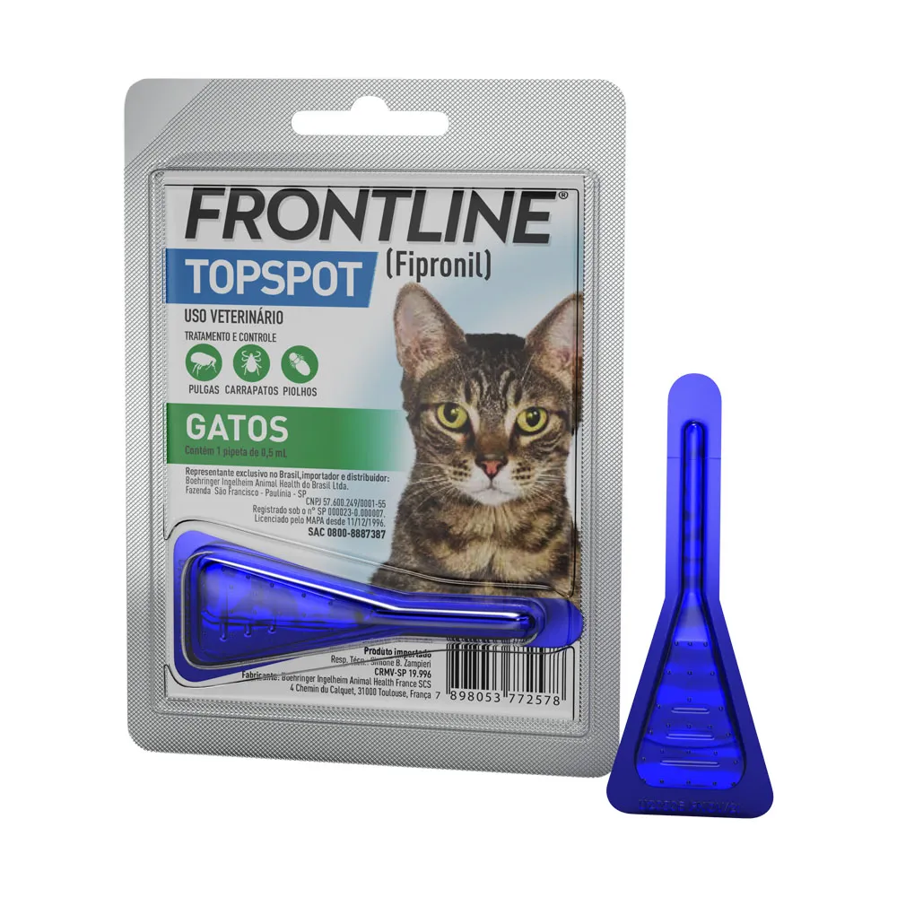

Antipulgas e Carrapatos Frontline  Tratamento tópico em pipeta para gatos Especificações do Produto Preço R$ 89,90 Marca Frontline Indicado para Gatos Descrição Tratamento tópico contra pulgas e carrapatos em gatos, com ação prolongada e fácil aplicação. Voltar para os produtos